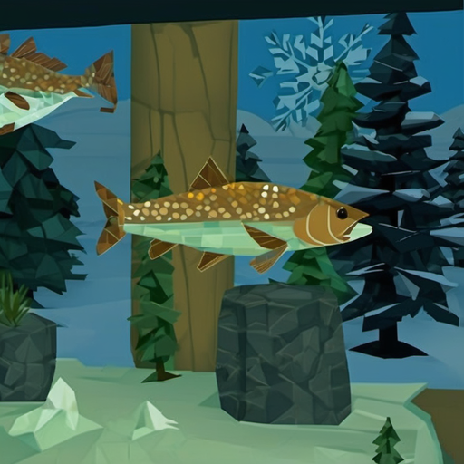

Arctic Fishing
Cozy ice fishing on a frozen Finnish lake. A Roblox game made by one developer in Finland.
Drill a hole, drop your bait and wait for the bite. Catch perch, pike, trout, whitefish and burbot. Sell your catch at the fish stand, or keep the best ones in your own aquarium and watch them grow.
Warm up in the shore sauna with other players. When four of you gather, a sauna party starts. Buy a small log cabin, hang your trophies on the wall and invite a friend over.
- Real Finnish ice fishing, no rush
- Five fish species, three baits, day and night, changing weather
- Your own aquarium from the first minute
- Shore sauna, sauna parties, log cabin with a trophy wall
- Trade with other players, daily quests, daily records
- Works on phone, tablet and PC
No pay-to-win. Coins come from fishing, not from Robux.
The game is in closed beta. Beta access goes through our Discord: join the Arctic Fishing Discord and apply in #beta-signup. Clips on TikTok: @arcticfishinggame.